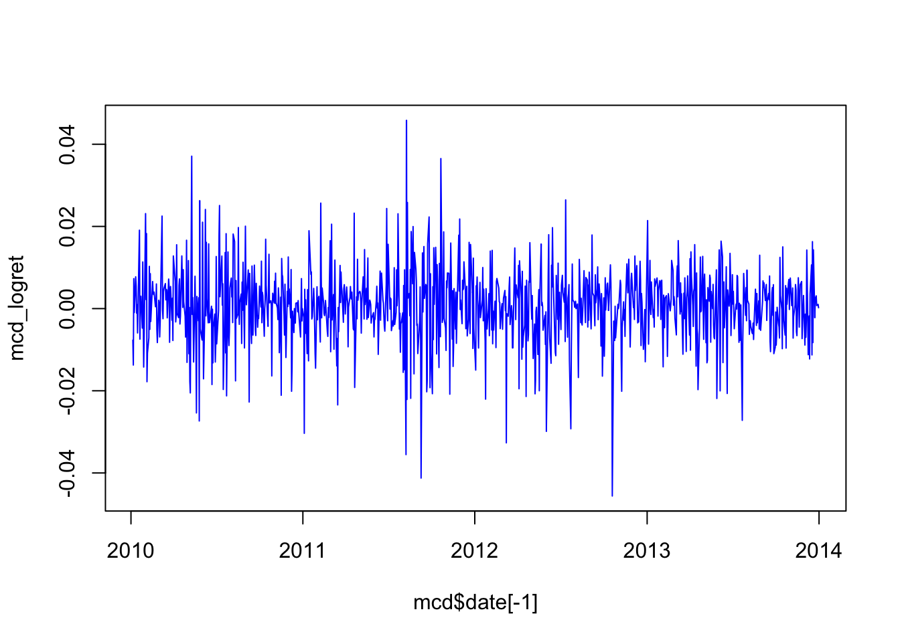

Chapter 4 Volatility
- Unconditional volatility, or volatility for short, is volatility over an entire time period, denoted by \(\sigma\).
- Conditional volatility is volatility in a given time period, conditional on what happened before, denoted by \(\sigma_t\).
- The subscript t means that it is volatility on a particular time period, usually a day.
- Clear evidence of cyclical patterns in volatility over time, both in the short run and the long run.

4.1 Calculations
Consider a sample \(x_i\) with mean \(\mu\) and sample size \(N\). Then we have an estimation of volatility:
For daily volatility \[\sigma=\sqrt{\frac{1}{N}\sum_{n=1}^{\infty} (x_i-\mu)^2}\]
For annualy volatility \[\sigma=\sqrt{250}\sqrt{\frac{1}{N}\sum_{n=1}^{\infty} (x_i-\mu)^2}\]
4.2 Volatility cluster
The volatility over a decade, year and month, we see that it comes in many cycles we called these volatility clusters. The following figure describes the daily volatility of McDonald’s stock from 2010-2014.
library(tidyquant)
mcd = tq_get('MCD',
from=as.Date("2010-01-01"),
to=as.Date("2014-01-01"),
get = "stock.prices")
mcd_logret=mcd$adjusted %>%
log %>%
diff
plot(mcd$date[-1],mcd_logret,type="l",col="blue")